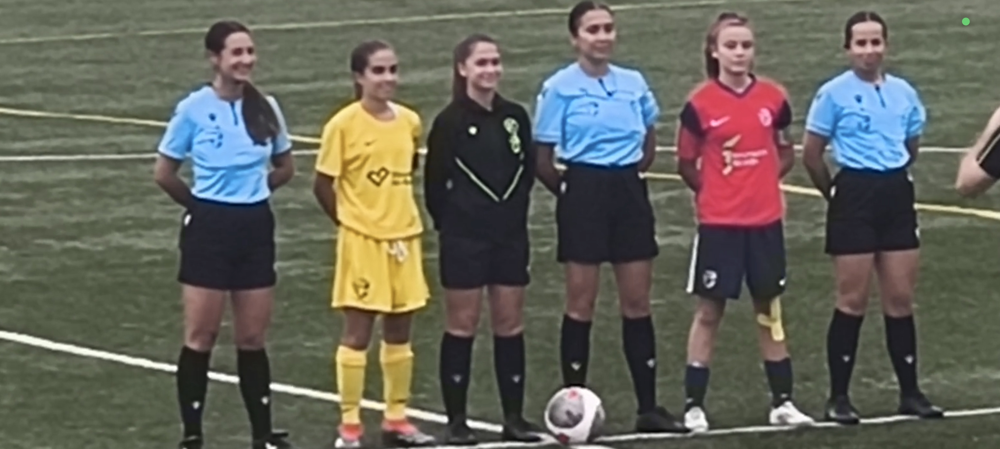

Fecha: 7 de noviembre de 2024
Cayetana fue convocada como una de las capitanas de la Selección Granadina Sub-14, representando con orgullo a su club, equipo y ciudad. Demostró su liderazgo y compromiso durante toda la experiencia.
Ese día, además de portar el brazalete de capitana, anotó un gol crucial contra la Selección de Jaén, demostrando su instinto ofensivo y calidad técnica. Fue un momento inolvidable tanto para ella como para su familia.
